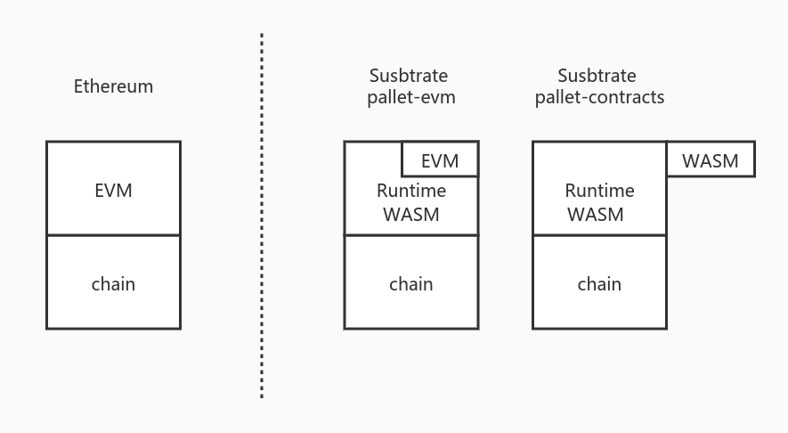
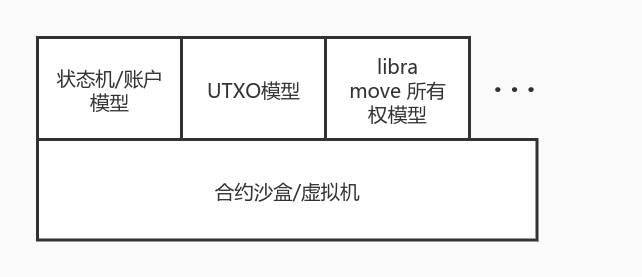
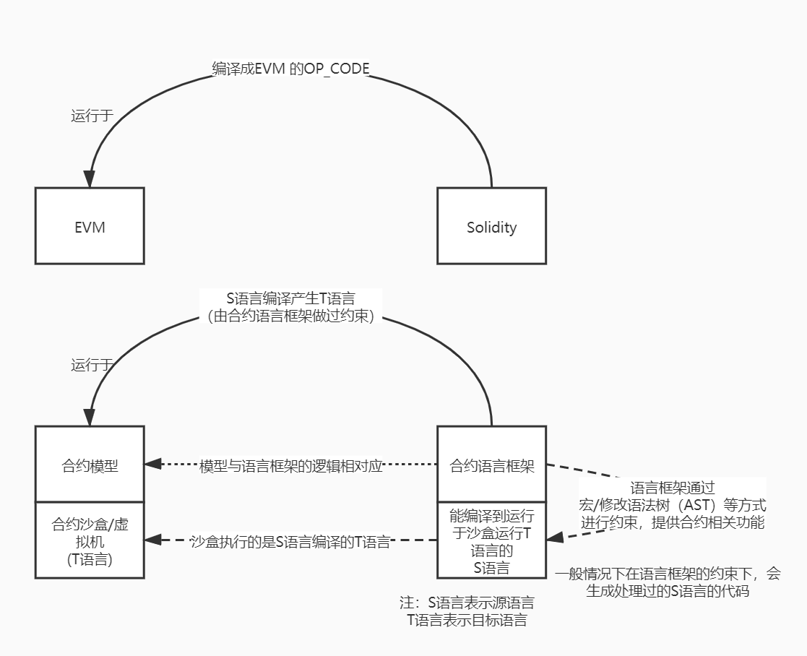
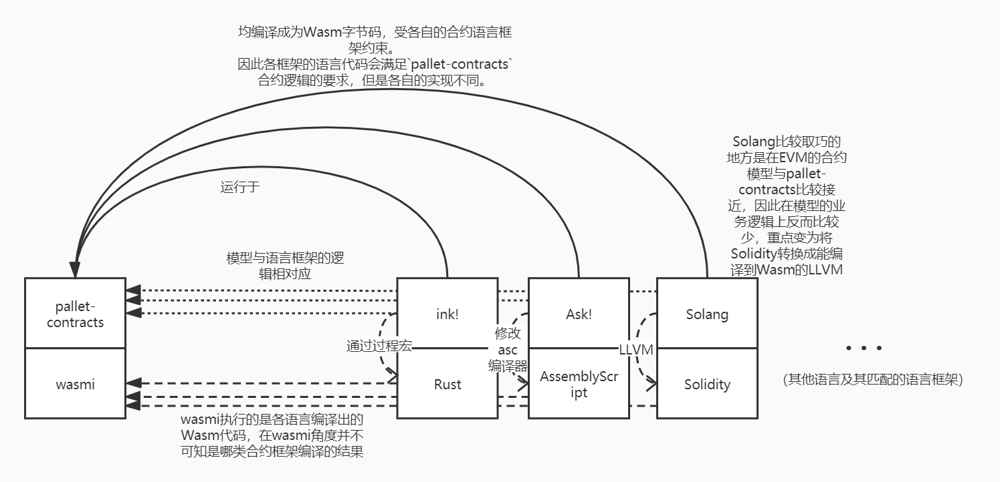
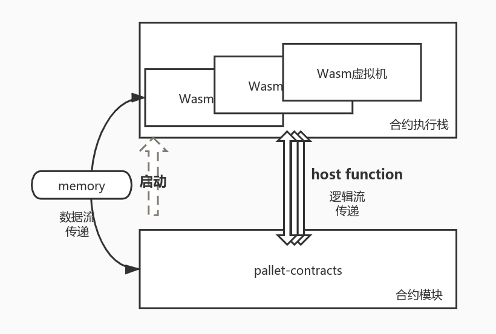
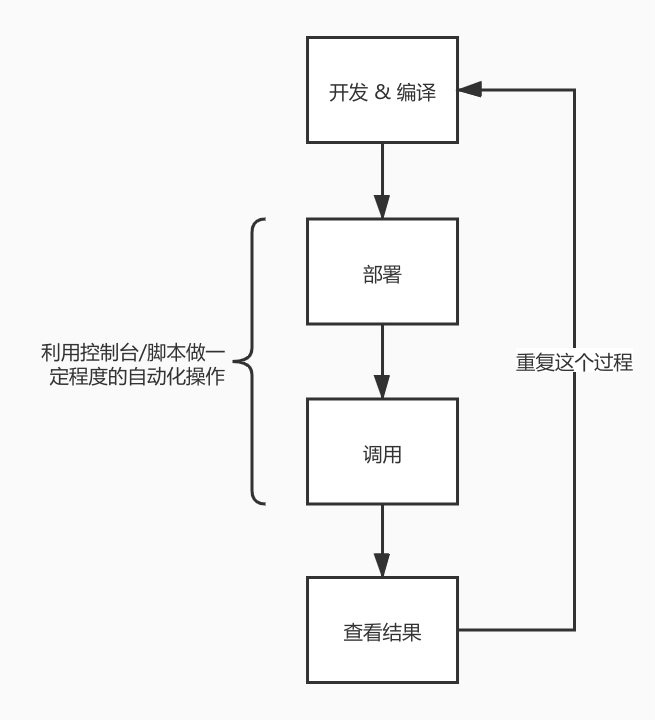
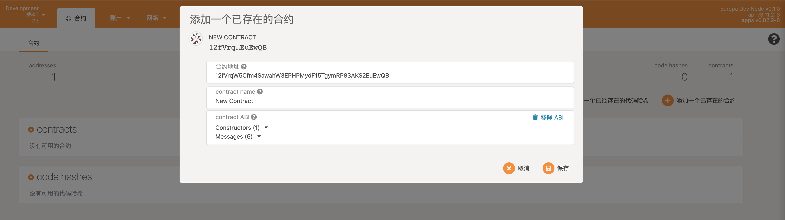
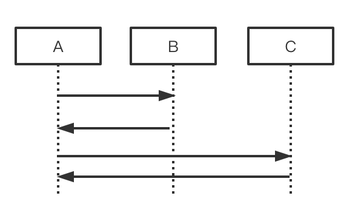
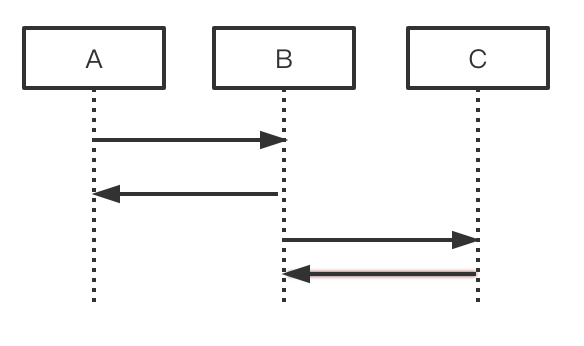
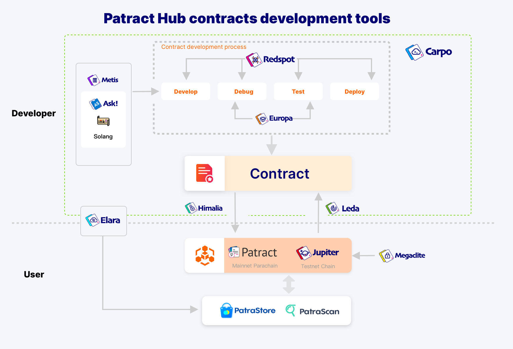

Substrate 合约书
介绍
本书用于介绍 Substrate 中与合约体系相关的一系列知识。
本书由 Patract (https://patract.io/) @ patractlabs 主导编写，由 Aten @ atenjin 负责。
本书仓库位于 https://github.com/patractlabs/substrate-contracts-book，欢迎有志之士一起为本书做出贡献。
本书主体包含三类：
- 运行合约的合约平台（模块）
- 编写合约的语言
- 帮助合约开发的工具们
其中由于pallet-evm（即EVM/solidity体系的合约）在以太坊生态中已有比较丰富的资料，故不会在本合约书中当做重点讲解。而另外的合约体系如pallet-actor，或libra移植合约平台等皆处于比较早期的研究阶段，因此也不会作为本书的重点。
本书当前主要以pallet-contracts （即WASM合约）作为主体进行介绍。
因此本书内容包含：
- 运行合约的合约平台（模块）
pallet-contracts
- 编写合约的语言
ink!Ask!Solang
- 帮助合约开发的工具们
RedspotEuropaElara
为了让合约开发者更好的理解pallet-contracts模块与WASM合约的运行方式，本书也会涉及一些WASM的介绍以及区块链合约模型的介绍。
合约综述
区块链运行合约的模型从本质上可以认为是 “区块链的环境（分布式共识系统）”+“能运行一段逻辑的平台”，例如
- 比特币的模型可以拆成区块模型/PoW + 比特币脚本
- 以太坊的模型可以拆成区块，状态模型/PoW + EVM
- Substrate的模型可以拆成区块，状态模型/Bft共识 + Runtime
因此一般来说，我们可以将区块链的模型拆成
- 运行区块链的底层系统：提供分布式可信环境
- 链的业务逻辑：运行在这个可信环境中
而由于区块链系统的特性，要求对相同的代码，相同的状态，执行的结果一定需要一致，因此在提供“链的业务逻辑”这一层，为了保证执行结果的一致性，要求整个运行环境必须是“无副作用的”，因此不会因为运行节点的不一致（指不是同一个节点）而导致运行的结果不一致。
因此为了保证这种特性，绝大部分区块链都会采用沙盒/虚拟机的模型加上裁剪一些功能来做到。
“运行合约的平台”即是一种链的业务逻辑，且这种业务逻辑特殊在其上面可运行的代码是开放的，合约内容不受链本身控制。因此对于这种情况，更需要一种“沙盒”的环境来隔离各个合约之间的运行。
什么是沙盒（虚拟机）
“沙盒”在计算机领域中的概念很广泛，而在区块链中，一般而言沙盒都会由一个虚拟机去运行（因为使用虚拟机最容易模拟沙盒的环境）。
因此不同的链就会采用不同的虚拟机来运行合约的沙盒：
-
Ethereum：
Gavin Wood 写的黄皮书提出了EVM的模型，创建了EVM虚拟机的概念并拟定了EVM的OP_CODE。之后设计了Solidity编译到OP_CODE，才有了Ethereum的整个生态。相当于Ethereum处理区块链的合约沙盒模型，从零到一构建所有设施。因此Solidity的语法以及EVM能做的事对比现在的区块链显得十分简陋（例如solidity的语法，EVM的栈深限制等等），但其作为先行者开创了区块链合约虚拟机模型先河。
-
Fabric:
作为联盟链，在使用场景上与公有链存在区别。因此Fabric提出链码的概念，并将链码运行在了docker中。docker就是比较重的一种虚拟机（相对于EVM而言），因此与EVM比较，Fabric的链码可以做到比Solidity更多的事，当然相对的，其运行的代价与EVM相比就高得多。
-
EOS：
EOS采用了Wasm作为合约的虚拟机，也是当时EOS的卖点。相比于运行Solidity的EVM，EOS的Wasm虚拟机的运行效率高了许多，以C++作为编译到Wasm的语言也天然拉近了许多传统的开发者。EOS作为Wasm虚拟机的先行者，在当时已经体现出Wasm相对于EVM的优势，但是由于其合约模型的设计（见下一章节）的缺陷以及当时环境的约束，再加上EOS并非真正的去中心化系统，导致EOS并没有很好的发挥出Wasm合约系统的能力。
-
Substrate 的
pallet-contracts：pallet-contracts采用了Wasm虚拟机来运行合约，当前出于安全考量只采用了Wasmi解释器来执行Wasm。但其合约模型与EVM的合约模型近似（见下一章节）。Wasm虚拟机与EVM同样具有启动快，随用随丢的特性，具备高性能和高扩展性的同时又不像docker， JVM一样太过庞大。因此Wasm慢慢在除了浏览器环境以外的更多场景被采用，例如边缘计算，热更新等等。所以当前越来越多的新区块链在需要一个沙盒环境时会将Wasm虚拟机作为主要方案。另一方面Wasm也具备从不同语言编译到Wasm的特性，例如rust，assemblyscript，c++等等，可以吸引到各类开发者加入到合约开发过程中。 -
其他：
其他区块链为了完成这个“沙盒”的目标也会有各自的方案，有的联盟链采用了裁剪过的JVM，有的公链采用了
RISC-V的虚拟机，有的链采用了从零设计一个虚拟机（如libra）。这些方案各自有各自的需求与特性，但从模型上而言，无论什么方案，最终目标都是为了提供一个虚拟机环境以运行合约沙盒。
运行合约的沙盒
上文已描述链的业务逻辑大部分会运行于沙盒的系统中，且“运行合约”这种业务逻辑更是需要沙盒隔离。而另一方面Substrate的runtime就是一个沙盒环境（运行于Wasm中），因此在Substrate的合约模块（pallet-emv，pallet-contracts），就是需要在一个沙盒环境中运行另一个沙盒，如下图所示：

其中：
- 左边是以太坊模型，表示每运行一个合约，需要在链的平台上启动一个EVM虚拟机去运行
- 右边是Substrate模型，我们当前已知Substrate的链的业务逻辑是运行在Wasm虚拟机当中的：
pallet-EVM：将以太坊的EVM编译到了Runtime Wasm当中，因此每运行一个合约实际上与以太坊一致，创建了一个EVM虚拟机去运行。如果链是以Wasm形态运行，即是在Wasm虚拟机中生成了一个EVM虚拟机去运行。pallet-contracts：Wasm合约使用Wasm虚拟机运行合约，与pallet-evm不同的地方是，如果链是以Wasm形态运行，Wasm合约的虚拟机是跳出当前Runtime Wasm虚拟机重新创建了一个新的Wasm虚拟机运行。- 当前（在substrate的提交之前
0b0d124d）Runtime的Wasm虚拟机推荐采用的是Wasmtime而pallet-contracts合约只能采用Wasmi。 pallet-contracts也可以使用Wasmtime执行，但是当前parity认为Wasmtime不可控性比较大，因此暂时还未采用Wasmtime。当前他们有相关计划，也有原型代码来使用Wasmtime运行pallet-contracts的合约。（注1）
- 当前（在substrate的提交之前
- 总之运行合约的过程中，大部分链都采用了一种沙盒的模型去运行合约。而对于EVM，
pallet-contracts模型而言，是每运行一个合约就会创建一个虚拟机。
注解
Wasmtime是实现了JIT的Wasm虚拟机，而Wasmi是纯解释器型的Wasm虚拟机。Wasmtime的执行效率比Wasmi高很多。
合约模型
在已经具备合约及合约沙盒的概念后，我们就可以开始讨论合约模型的概念了。
合约沙盒只是代表运行合约的环境，而合约是以什么方式运行的，合约和合约是怎么交互的，合约是怎么与链的数据互动的，这些问题就归属于合约模型问题。
换句话说，合约模型就是合约是以什么模型运行在合约沙盒/虚拟机中的。

如图所示，合约模型与合约虚拟机本质上是可以解耦的，其中关系只存在合约虚拟机是否能支持上层所需要的合约模型，例如：
- Bitcoin 的虚拟机就是比特币脚本的栈执行器，由于执行器设计是非图灵完备的OP_CODE，因此对于上层的合约模型只能支持Bitcoin的脚本。
- Ethereum 跟随Bitcoin的灵感，设计了具备图灵完备的OP_CODE，即EVM虚拟机（Ethereum Virtual Machine）。但是EVM的OP_CODE比较简陋，且只有栈的设计，没有堆的概念。但是EVM引入了读写状态的OP_CODE，因此从虚拟机机制上对合约模型可以支持状态模型。因此EVM也被看做一个执行状态转换的状态转换机（如Gavin Wood撰写的以太坊黄皮书中所描述的）。状态模型实际上是比较通用的抽象模型，绝大多数模型都可以用状态模型模拟（如在状态模型中构建UTXO模型），因此从理论上来说，只要继续完善EVM的OP_CODE，EVM的上层同样可以构建出其他合约模型。
- libra 认为区块链的核心在于资产的处理，因此提出了Move的虚拟机模型（Move Virtual Machine (MVM)）来从虚拟机上限定合约的模型，可以理解为是一种特化逻辑过的OP_CODE集合。因此MVM的上层只能运行Move模型。
通过以上讨论，我们可以认识到合约模型的概念，并且理解到虚拟机对上层合约模型的限制，因此接下来就可以讨论Wasm虚拟机可以运行的合约模型以及pallet-contracts的合约模型构成。
Wasm 虚拟机
Wasm是一种在基于栈的虚拟机上运行的二进制的指令格式。（WebAssembly (abbreviated Wasm) is a binary instruction format for a stack-based virtual machine, from https://webassembly.org/）因此Wasm的模型和主流计算机程序的模型结构比较相似。另一方面Wasm被设计成为了一种比较通用的形式，且设计了WASI并支持了运行环境自由定义host function，因此虽然Wasm从浏览器发展而来，但是当前的使用场景已经不限于浏览器，开始在边缘计算，热更新，Serverless平台等发挥效果。
若以指令的完备性来衡量一个虚拟机的能力，则EVM处于半成品的程度，限制多且不够灵活；而JVM，Wasm虚拟机则是比较完备的，限制少，功能性强。另一方面指令设计的合理性一定程度也会影响虚拟机的执行效率，同时虚拟机采用的实现方案也会对执行效率产生比较大的影响。
例如EVM当前只能以解释器（interpreter）的形式运行，并且当前的实现过程体（go, c++等版本）中没有看到针对解释器的优化，执行效率比较底下，而 JVM, Wasm等虚拟机有采用JIT的模式的实现，执行效率相当高甚至逼近本地执行的性能。
注：
pallet-contracts当前只能使用wasmi（解释器）执行Wasm代码，因此合约的执行性能比不上使用wasmtime的Runtime的执行性能。
而同时，Wasm虚拟机相比于JVM等虚拟机，十分轻便（Lightweight），快速，可定制性强，且host function的功能给予了Wasm虚拟机与宿主之间交互的通道，因此和其他虚拟机相比，将Wasm虚拟机作为区块链合约沙盒与链的功能结合在一起比较容易。
另一方面在笔者看来，Wasm是处于底层代码与上层代码之间比较好的一个抽象层，且其复杂性与完备性也远超于EVM，因此比较适合区块链合约领域的需求。
因此Wasm虚拟机提供的沙盒环境在满足合约沙盒的前提下还满足以下2点要求：
- 指令完备，功能性丰富，执行效率高
- 有适合的接口能与宿主（这里指代运行Wasm的环境，即链）交互，方便宿主提供需要的功能。
EVM 的合约模型
由于Ethereum是存储状态的区块链，因此EVM的合约模型理所应当的需要基本读写状态的功能。如果把每次合约运行的过程看做一次程序的启动到执行结束的过程，那么状态数据的变化就对应着这个程序需要持久化数据的变化。
因此对于读写状态，以太坊的EVM提供了SLOAD和SSTORE两个指令。
另一方面以太坊描述一个账户使用了“账户模型”，即将合约和调用合约的用户都看做了一个账户，在这个账户下存在balance等概念，因此EVM提供了CALLER，ORIGIN，CALLVALUE等等一系列指令来描述这种模型。
同时由于在EVM的抽象体系中，认为合约与用户是一致的，因此出现了“合约调用合约”的模型，即CALL，DELEGATECALL等指令，由此带来了合约的可组合性，造就了Ethereum繁荣的生态。而在EVM中，一个合约依托于一个EVM进行运行，因此合约调用合约是在一个EVM中启动了另一个EVM并加载指令进行执行。
当然EVM虚拟机设计的初衷就是为了解决比特币脚本的非图灵完备问题，为了解决这个问题并保证停机问题不发生，引入了指令的Gas计费模型
因此总结以上可以得到，EVM的合约模型具备以下特性：
- 处理数据的模型是状态机模型，状态的变更靠外界调用触发（类比于调用了状态变更函数的过程）；
- 合约模型中需要链相关的特性；
- 将合约与用户看做一致，允许合约调用合约；
- 引入指令计费模型。
pallet-contracts的合约模型
这里直接下结论：pallet-contracts虽然使用了Wasm虚拟机来执行代码，但是其合约模型基本与EVM合约模型一致。
也就是说pallet-contracts的合约模型同样具备以下4点特性：
- 处理数据的模型是状态机模型；
- 合约模型中需要链相关的特性；
- 将合约与用户看做一致，允许合约调用合约；
- 引入指令计费模型。
并且，在以上4种特性的基础上，增加了“存储租赁模型”：
Rent存储租赁计费。
在上文已经称述了合约执行的环境和合约模型是可以解耦的，EVM由于设计的比较早还没有解耦这个层次的概念，因此在指令中SLOAD，SSTORE及类似和链相关的指令是与EVM其他指令合并一起的。而Wasm本来并非为区块链设计，因此一定不存在这些和链环境相关的指令。
因此Wasm的host function即是用来完成这件事情的。链作为host宿主，只需要把他认为合约可能会用到的方法提供给Wasm虚拟机，让他导入这些函数对象，在合约的执行过程中即可以使用。因此通过host function，pallet-contracts合约模块就可以具备1，2，4功能，并将提供3需要的部分功能，同时第5点特性（租赁计费）也可以引入。
并且其中第3点功能的实现方式也与EVM一致，当出现合约调用合约的部分时，通过host function从Wasm回到了pallet-contracts模块，并启动了一个新的Wasm虚拟机去执行被调用的合约。（该部分在以后的文章中会描述）
因此总结而言，pallet-contracts的合约模型具备如下特性：
- 合约模型与EVM的合约模型一致，并在此基础上增加了存储计费模型
- 与链交互的实现通过Wasm的
host function特性实现
使用Wasm虚拟机实现其他合约模型
刚才简要描述了pallet-contracts是如何在Wasm虚拟机上实现合约模型的，由于前文已经解释了虚拟机与合约模型是可以解耦的，因此实际上在Wasm虚拟机上同样可以实现其他的合约模型。
例如我们可以考虑将Move虚拟机也移植到Wasm虚拟机中，其有两种可能的实现方式：
-
类比于将EVM的实现体在Runtime的Wasm环境运行，可以将MVM的实现体也编译成Wasm的形式（例如命名为
pallet-mvm），在Runtime Wasm中运行。基于这种实现，Move依然可以按正常方式编译，并和Solidity的编译结果运行于
pallet-evm一致，将Move的编译结果运行在例如pallet-mvm的平台上。 -
将MVM与所有权，链相关的特性抽象一层，做成和
pallet-contracts的形式，并设计将Move语言编译的中间码IR编译到Wasm。基于这种实现，可以将Move编译成为Wasm，并在Wasm虚拟机中运行。
其他合约模型
EOS的合约模型
EOS的合约模型与EVM类似，同时强化了账户模型的概念。因此EOS使用Wasm的方式也是基于Wasm的执行，并通过host function引入与链相关的功能。
EOS和EVM模型的主要区别在于，EOS的合约调用合约的过程是以发交易的形态调用，并且EOS的资源模型是抵押模型。当前普遍认为正是EOS的抵押模型最后导致EOS没有走向成功。
异步合约模型
pallet-actor是 substrate 尝试实现异步合约模型的一个开端，当前没有什么进展。pallet-actor的模型打算使用Wasm虚拟机作为运行环境，并在此基础上添加异步的功能以提升性能。
当前也有其他少数对异步合约模型的研究，但是皆处于比较初步的阶段。
合约语言（框架）
与“合约模型”的概念相对应的（运行平台），我们可以衍生出合约语言（框架）的概念（编写能运行于平台上的代码）。
而这里不简单的使用“合约语言”，而是用“合约语言（框架）”这样的词语，是因为由于上一章节中我们已经拆分出了“合约沙盒”与“合约模型”的结构层次，因此实际上一些新型的合约平台并不是像EVM那样“发明”了一套新的Solidity合约语言，而是选择了一些语言（如Rust，C++，AssemblyScript等），基于这门语言在“hack语法解析”，“宏”，等维度上给现有语言添加上合约相关的约束，功能逻辑等。因此许多情况下会以“框架”，“库”等形态存在（如Frame Contract Pallet的rust合约语言框架ink!）。而这种“框架/库”又不是平时程序开发中使用库的维度，有一些合约语言框架需要修改到编译器维度，因此我们更倾向称呼为“语言框架”。
合约语言（框架）与合约模型的对应关系

如上图所示，上半部分是 EVM 与 Solidity 之间的关系。由于EVM/Solidity提出的时间比较早，因此其模型与通常的计算机虚拟机与语言的模型关系是一致的。而下半部分是在分离了合约模型后，语言框架部分的对应关系。
这里重点介绍下半部分，上半部分读者可以根据自己在以太坊合约开发的经验对比后文的介绍进行分析。
在编译形语言的体系中，先简单定义以下名词（非严谨说法，仅为了后文介绍而定义）：
- S语言：程序员编写代码的原语言(source)，例如将C++编译成汇编，那么C++就是原语言S
- T语言：S语言通过编译器编译后生产的语言(target)，例如将C++编译成汇编，那么汇编就是目标语言T
前文已经介绍了运行合约体系的环境可以在逻辑上拆分为“合约模型”与“合约虚拟机”，前者管合约的业务逻辑，后者管如何运行合约的代码，那么相对应的，合约语言部分同样可以拆解为“合约语言框架”和“编译到合约虚拟机的S语言”。
那么根据这种定义，显然，Solidity就是就是一种同时具备“合约语言框架”和“S语言”特性的产物：
-
Solidity具备图灵完备的语言体系，因此Solidity是一门“语言”（相对于BTC脚本而言）
-
Solidity的语法中具备很多合约特性的关键字，对应于“合约语言框架”的概念，如：
mapping：合约存储的典型案例msg.sender,msg.value：等与合约调用相关的变量view,pure等修饰符call,delegate_call等与合约调用相关关键字
这些概念并非是为了支持Solidity这门语言能执行逻辑而存在的，而是为了服务于Ethereum合约虚拟机的业务逻辑而存在的。
而“合约语言框架”实现的目的就是为了与合约模型的业务逻辑所对应，什么样的合约模型就需要什么样的合约语言框架。例如EVM底层是k/v类型的存储，因此Solidity中设计的mapping不能遍历（除非附带多余存储）。例如EVM合约交互的合约模型设计为合约调用合约的模式，那么Solidity中就提供了call，delegate_call。对应到其他合约体系也同理。
而另一方面合约语言框架是架设到S语言上的附加功能，因此合约语言框架提供的功能最终也是编译到S语言对应的T语言上。而区块链所需要的一些特性例如确定性要求，不允许使用操作系统调用的接口等等，会在这个层面上做约束。因此合约语言框架除了本身对S语言本身提供了合约模型的功能以外，还会需要给语言本身产生一定的约束。这一步也是开发和理解合约语言框架中比较困难的地方。同时也正是由于这个点，造成了合约开发者使用合约模型框架的过程中很多别扭的情况。而Solidity或者Move等语言本身就是针对合约平台开发的新语言，纵使其语法会有很多模拟其他语言的痕迹，但是在做约束的这点上可以做到对合约开发者比较友好。而对现有语言加上合约语言框架功能的合约语言，在这一点上很难处理的很好，而这也是造成合约开发者较难使用框架功能的原因之一。
以ink!举例而言：
-
在区块链中应该避免使用float，因为浮点数可能产生非确定性行为。因此在合约/runtime开发中，若需要使用浮点数，或者出现溢出数字乘除的时候就需要引入定点数来处理。因此在ink!的合约中可以引入Substrate runtime提供的定点数的库来处理。
-
由于
pallet-contracts的合约模型与EVM基本相同，因此pallet-contracts的合约存储也是由K/V构成。那么合约模型框架就需要处理标准库里提供的各类集合类型。因此在ink!中将标准库中可能用到的集合类型重写了一遍，添加了能将集合元素类型处理成K/V数据的过程。因此在ink!的合约存储中，若设计了集合类型，只能使用ink!标准库中提供的类型。而另一方面由于ink!的返回值需要导出metadata令第三方处理，而当前的metadata的接口实现只给标准库中的集合实现，因此ink!方法的返回值的集合只能使用标准库的集合类型。因此就会出现以下代码：#[ink::contract] mod test { // 引入 ink 实现的 Vec use ink_storage::collections::Vec as StorageVec; // 引入标准库的Vec use ink_prelude::vec::Vec; #[ink(storage)] pub struct Test { owners: StorageVec<AccountId>, // 只能使用 ink的Vec } impl Test { #[ink(message)] pub fn get_owners(&self) -> Vec<AccountId> { // 将 ink 实现的 Vec 转换为 标准库实现的 Vec self.owners.iter().map(Clone::clone).collect() } } }
因此总结而言，在模型结构上，开发者需要理解到：
- 合约语言框架与合约模型是对应关系，语言框架的特性会与模型一一匹配；
- 合约语言框架对S语言提供了针对合约模型的业务功能，同时也根据合约业务逻辑的需求对S语言本身有约束。
不过由于Solidity本身定位就是服务于写合约而设计出来的语言，因此许多与合约相关的功能能够设计为关键字。而若是一门语言本身并不是针对合约设计的，则需要基于这门合约设计对应于合约模型的“合约语言框架”。由于是在这门语言上添加新的功能，因此一般情况下很难与语言本身结合的比较深入。因此最后做到的成果与这门语言提供的能拓展语法树的能力相关。语言本身提供了越灵活修改/添加语法树的接口（宏，插件等），那么合约语言框架就可以实现越多的功能。语言本身提供这类可扩展性的功能越少，那么合约语言框架就只能考虑修改编译器，扩展需要的语法以支持合约模型，这样最后的语言就变成了原语言的一种“方言”了。因此前者可以以库/框架的形态存在，而后者则变为了一门新的语言，这也是我们将这种模型称为“合约语言框架”的原因。
pallet-contracts 与对应的合约语言框架

在上文解释了合约语言框架的模型后，我们就可以把合约模型框架套在Substrate的Wasm合约系统上了。
那么显然，ink!这整套系统的实现，就是与pallet-contracts的合约模型相对应的。ink! 3.0通过过程宏（2.0通过神声明宏）的系统，将对应于pallet-contracts的功能逻辑引入到了rust当中。因此这套系统里的S语言就是rust，而T语言就是Wasm字节码。ink!在一个辅助工具cargo-contract的帮助下，将使用了ink!框架的rust代码编译成为了合约的Wasm字字节码。而Wasm字节码在链上运行的环境就是wasmi（将来也会引入Wasmtime等JIT形式的执行环境）。
而由于pallet-contracts的执行环境是Wasm字节码，因此能够编译成Wasm字节码的的语言配套上符合pallet-contracts合约模型的合约语言框架，都可以产生能运行于pallet-contracts这个合约平台上的合约。所以对于pallet-contracts而言，完全可以设计不同语言的合约体系给发开发提供多种选择使用不同的语言开发Wasm合约。
当前支持运行于pallet-contracts的合约语言框架除了对于rust的ink!之外，还有以下项目：
- Ask!, 由 Patract 主导开发，是在AssemblyScript语言上的合约语言框架。(当前正在开发中)
- Solang, 由 hyperledger-labs 主导开发，支持将 Solidity 编译到
pallet-contracts的Wasm的工具。
Wasm简要介绍
Wasm与合约模型的关联

pallet-contracts 合约模块
pallet-contracts合约模块, 一般称呼为“Contracts Pallet” 或者 “FRAME Contracts pallet”，又或者称呼为“Substrate Smart Contracts”，是parity官方研发的Wasm合约模块。
依据Substrate knowledgebase的介绍，Contracts Pallet具备如下特性：
- Are inherently safer to the network.
- Have built in economic incentives against abuse.
- Have computational overhead to support graceful failures in logic.
- Have a lower bar to entry for development.
- Enable fast pace community interaction through a playground to write new logic.
ink
ink! is an eDSL to write WebAssembly based smart contracts using the Rust programming language. The compilation target are blockchains built on the Substrate framework.
ink! 是 parity 官方编写的，可以提供一种 eDSL 的方式编写 Rust 合约，并编译为 Wasm 运行于 Contracts Pallet 模块上。
虽然 ink!自称为一种写合约的 eDSL，但是笔者更倾向于认为 ink!是使用 Rust 语言编写符合能满足 Contracts Pallet 运行的合约框架。
例如对于 EVM 而言，若把 EVM 的指令集看做一种规范（EVM 的指令集已经包含了 EVM 合约模型的信息），那么只要能编译到 EVM 指令集的语言都可以称为能运行在 EVM 上的合约语言，例如：
- Solidity
- Vyper
而 ink!这里同理。Contracts Pallet 要求是能满足运行 Contracts Pallet 合约模型的 Wasm 代码，因此任何能编译成满足这个 Wasm 合约模型的框架/语言/库都可以称为 Contracts Pallet 的合约语言。
ink!就是使用 Rust 语言，并在此基础上通过 Rust 的卫生宏系统设计了一套 eDSL，并使用该 eDSL 编写能满足 Contracts Pallet 要求的 Rust 代码。除 eDSL 之外，ink!还提供了适用于合约模型的存储集合类型，生成 Metadata（对应于 Solidity 的 ABI）等工具库。
ink!的官方文档见：
ink! 到 Contracts pallet 的过程
parity 官方文档中提供了示例图：

由此图可知，编写 ink!合约并部署的过程需要
- ink! 依赖库：提供 ink!的 eDSL 框架以及提供相应的依赖组件
- cargo-contract: 编译 ink!合约的工具
- SDK：与链交互并将合约部署到链上的 SDK，parity 官方主要提供了
polkadot.js，Patract 提供了 Himalia 工具包，包含go，java，python，C#的 SDK
本章节将主要介绍 ink!以及cargo-contract的信息，关于 SDK 的信息放在后续章节介绍。
ink! tutorial
TODO
ink! 框架
ink!的所有主体功能都实现于 ink/crates 目录下：
- crates:
- allocator：与Wasm相关，定义allocator，开发者绝大部分情况下无需关心
- env：提供和链相交互的组件，总结来说就是和链相关的部分都会放在这里，包含
- host function 部分
- 部分需要导入的类型、trait定义
- event 的topic
- lang：eDSL过程宏的定义组件，合约的规范由这个地方决定
- metadata：生成metadata的组件
- prelude：合约编写过程中需要预先导入的包，包含一些标准库
- primitives：操作状态存储的指针，开发者绝大部分情况下无需关心
- storage：提供链存储的分配模型以及提供一些预定义好的存储集合类型
ink! eDSL基础元素
ink! eDSL设计的元素与Solidity的元素其实比较近似，因为Contracts Pallet的合约模型结构和EVM的合约模型就是比较近似的。
因此ink!的设计可以找到很多和Solidity相似的影子（Substrate 的 Runtime 设计同理）。后文描述ink特性时会尝试跟Solidity的特性进行对比，方便读者理解。
eDSL 的元素
由ink!文档或ink!提供的example，代码可以看出，ink!在Contracts Pallet的模型上，同样提出了以下三点基础元素：
constructor/messagestorageevent
不过由于Rust过程宏的设计关系，可以看到ink!首先要求一个合约需要处于一个mod下，并且在这个mod的上面添加上#[ink::contract]宏：
#[ink::contract]
mod erc20 {
// ...
}
这样，相当于告知ink!从这个mod里面的东西就是要依据ink的eDSL处理的部分。
#[ink::contract]
因此当遇到宏#[ink::contract]，即表面这是在ink!所识别的“合约部分”。因此我们可以看到，很多use xxx的导入都会放到处于#[ink::contract]的mod作用域下。
并且当前ink!设计为，在一个crate包下，只能出现一个#[ink::contract]，因此代表着ink!认为一个合约的维度是以rust的crate为单位，即如果在同一个crate中，无论是在同一个文件（比如都在lib.rs下）或者是在不同的文件中定义了2个以上的被#[ink::contract]修饰的mod，例如：
#[ink::contract]
mod erc20 {
// ...
}
#[ink::contract]
mod another_define {
// ...
}
类比于solidity的：
// a.sol 在同一个文件中定义多个 `contract`
contract A {
}
contract B {
}
那么在ink!的编译中会认为这种情况是非法的。
当然与之相对的，只要在当前crate中只有一个#[ink::contract]修饰的mod，其他mod该怎么正常使用就正常使用，因此ink!修饰的合约crate依然可以很好的做好代码隔离，增强可读性和可维护性。这个能力对于维护大型复杂合约比较重要，例如：
#[ink::contract]
mod erc20 {
use crete::another_define::*;
}
mod another_define {
// ...
}
例如如下实例：
mod fxck {
use crate::erc20::Erc20;
use ::ink_lang::Env; // 注意这里需要引入 `ink_lang::Env`
impl Erc20 {
pub fn tmp(&self) {
self.env().caller(); //
}
}
}
#[ink::contract]
mod erc20 {
#[ink(storage)]
pub struct Erc20 { ... }
impl Erc20 {
#[ink(constructor)]
pub fn new(initial_supply: Balance) -> Self { ... }
#[ink(message)]
pub fn transfer(&mut self, initial_supply: Balance) -> Self {
self.tmp(); // 调用在其他`mod`里定义的方法
}
}
}
这种模型可以做到一些在Solidity下做不到的代码隔离，增强可维护性。（因为Solidity的library只能用于纯函数计算）
总结而言，在ink!体系下：
- 一个合约以一个
crate的单位，一个crate内只能出现一个#[ink::contract]定义； #[ink::contract]修饰的mod代表合约的内容，同时也代表了合约的基础元素都必须定义到这个mod下；- 除
#[ink::contract]修饰的mod以外的部分（其他mod，函数，类型）皆遵循rust的规则，可以做好良好的代码隔离提升可维护性； - 实践中可以将
#[ink::contract]修饰的mod当做合约的入口，将实现的逻辑分散到其他mod下。
以下使用“合约mod”表示被#[ink::contract]修饰的mod
storage
在合约mod中，一定需要定义一个结构体，且这个结构体被#[ink(storage)]所修饰，表示定义了该合约的存储。
同时这个被#[ink(storage)]修饰的结构体定义，也被视作一个可操作的合约实体，因此所有与合约相关的资源，类型，操作都会和这个结构体绑定在一起，当在合约调用合约的情景中，被调用的合约的类型也由这个结构体来表示。
因此这个结构体可以理解为是合约实体。
虽然修饰
mod的部分才是合约，但是因为mod在rust中只能代表作用域，因此为了实践使用，使用#[ink(storage)]修饰的结构体表示能够进行操作的合约实体。在这种语境下，可以将
#[ink::contract]修饰的mod理解为“开启了合约域”的概念，而#[ink(storage)]修饰的stuct是在这个合约域下的合约。
这里ink!定义的storage的概念和Solidity中定义“存储”的概念一致，表示定义在这里的属性即是最终写到链上的状态。一切合约逻辑编写的目的最后都是为了对这里定义的状态的修改。
不过由于当前ink!采用使用一个结构体来承载合约状态的方案，因此当前这个合约所有的状态都只能定义在这个结构体中。当合约设计得比较大，比较复杂的时候会导致这里的可维护性下降。
定义storage的示例如下：
#[ink(storage)]
pub struct Erc20 {
/// Total token supply.
total_supply: Lazy<Balance>,
/// Mapping from owner to number of owned token.
balances: StorageHashMap<AccountId, Balance>,
/// Mapping of the token amount which an account is allowed to withdraw
/// from another account.
allowances: StorageHashMap<(AccountId, AccountId), Balance>,
}
被#[ink(storage)]修饰的结构体在后文统称为合约结构体。
这里尤其需要注意几个特性：
-
在该合约结构体内定义的属性的类型必须是实现过
SpreadLayout的类型（或者更准确说是实现了PackedLayout的类型，因为PackedLayout是继承于SpreadLayout的定义）：/// Types that can be stored to and loaded from the contract storage. pub trait SpreadLayout { }这里只能使用实现过这个trait的类型的理由很简单，因为storage和一般的类型不同，其必须含有“链”的信息在其中，因此不同的链的合约实现都必须有一个部分用于处理合约中的storage（即状态）的分配问题。
例如Solidity在编译过程给实际上是按storage在合约中定义的上下顺序，做偏移分配该状态的key。这里实现过
SpredLayout或者说PackedLayout类型的都会有一个近似的过程来进行状态的分配。ink!对于一般类型已经都做过基础实现，但是对于集合类型（
Vec，HashMap等）而言，由于合约的状态需要hook读写的过程，因此无法对集合类型实现这个trait。所以在ink!中，对标准库中常用的集合类型重新全部做了一次实现，且位于#[ink(storage)]修饰的结构体的属性类型，若使用集合类型时，必须使用ink!提供的集合类型。由于Solidity比较简陋，因此Solidity定义的存储map是无法进行遍历的。（由Solidity设计的缺陷导致）
ink!在设计的这块的时候进一步做了很多事情，因此ink!提供的集合类型
Vec，BTreeMap，HashMap等等都是可以遍历的。相较于Solidity能实现的功能而言是相当大的进步。 -
即便基于以上的设计，嵌套集合类型依然很难实现（因为Substrate的状态结构采用了k/v模型）。因此在设计中还是只能尽量避免嵌套集合类型。如果一定需要嵌套集合类型，需要将嵌套的层次打平（flat），将第二层的key和第一层的key合并一起，使用元组替代（相当于Substrate Runtime中的
double_map）// solidity contract A { mapping (uint => mapping (uint => uint)) }在ink!中类似的代码应该为:
#[ink(storage)] pub struct Erc20 { // 注意这里的key采用了元组 `(AccountId, AccountId)` allowances: StorageHashMap<(AccountId, AccountId), Balance>, } -
storage中提供了一种
Lazy的模型，允许开发者使用Lazy包裹一个类型，可以让状态数据在使用到的情况下再加载：/// A lazy storage entity. /// /// This loads its value from storage upon first use. /// /// # Note /// /// Use this if the storage field doesn't need to be loaded in some or most cases. #[derive(Debug)] pub struct Lazy<T> where T: SpreadLayout, { cell: LazyCell<T>, }使用方式：
#[ink(storage)] pub struct Erc20 { /// Total token supply. total_supply: Lazy<Balance>, }
constructor/message
constructor/message就是触发合约状态变更的入口函数。也就是说constructor/message即是合约状态的状态转换函数。
constructor/message只能修饰合约结构体的方法，不能用来修饰其他结构体的方法，或者其他纯函数。
在合约mod中，被constructor和message修饰的合约结构体的方法至少各有一个，若分别少于1个都会导致编译错误。
其中：
-
constructor即对应着 Solidity 合约中的构造函数。当合约被部署的时候（在Contracts Pallet中当前代表着从已上传的合约代码中做instantiate的过程），会触发对应构造函数的调用。这里需要强调，构造函数的调用与合约实例化是2个概念的事情，这个过程在ink!和Contracts Pallet的协调过程中并非原子化。因此会出现构造函数没有被调用，但是合约地址会生成，也可以正常调用这个未调用过构造函数的合约实例的情况。
典型的例子是在调用
instantiate的时候传入的错误编码的参数。 -
message即对应着 Solidity 合约中的public/external等 的 call 方法。由于Rust可变/不可变方法的特性，message利用了这个特性来表示这个方法是否会修改合约的状态。因此若
message修饰的方法是// 注意方法的第一个参数是`&self` #[ink(message)] pub fn total_supply(&self) -> Balance { *self.total_supply }则表示这个方法的调用不会修改状态（由rust语法所控制），和以太坊一致，这类方法多用于rpc调用返回一个合约的存储，或返回一些基于存储的计算结果。
若修饰的是
// 注意方法的第一个参数是 `&mut self` pub fn transfer(&mut self, to: AccountId, value: Balance) -> Result<()> { let from = self.env().caller(); self.transfer_from_to(from, to, value) }则表示这个方法的调用会修改状态，因此这个方法如果是以交易调用被打包的形式被调用执行时，会触发状态的改变。若是以rpc调用时，表示是模拟执行了一次。
同时在合约编译后会生成metadata.json（对应Solidity的ABI），在这个metadata中对于message部分会有一个
mutates的字段来标示这个方法是否是可变的。
message的selector
Solidity对于合约方法的ABI的产生使用的是将方法名加上参数类型作为函数签名拼凑成为字符串然后做hash取前4字节。
call = "func_name(param1_type,param2_type,...)"
bytes4(keccak256(call), a, b)
在ink!中这种让合约区分调用触发点的概念叫做selector。
由于rust不支持函数重载，因此在ink!中采用了比较简陋的设计，直接对函数名字的字符串做hash取前4字节：
call = "func_name"
blake2_512(call)[0..4]
笔者认为这种设计造成了其他合约语言设计的困扰。因为rust不支持重载不代表别的语言不支持重载。当前Solang将Solidity编译到Wasm的过程后，想和ink!的metadata做兼容，互相调用就会出现问题。
另一方面selector也可以运行合约开发者自己定义的
#![allow(unused)] fn main() { #[ink(message, selector = "0xCAFEBABE")] pub fn was_it_ten(&self) -> bool { ... } }
message的payable
Solidity中对于方法会有一个payable的修饰符，用于表示这个方法可以接受一定金额。
因此在ink!中也提供payable来表示调用这个方法的同时是否可以附带转移一定的本币的金额。在ink!当前的设计中，若在调用一个非payable的message时同时附带了金额时，这个调用过程会认为是错误的。
默认情况下认为paybale是false的，只有当合约开发者指定了payable后才是true。
指定一个message是可调用的案例是：
#![allow(unused)] fn main() { #[ink(message, playable)] pub fn was_it_ten(&self) -> bool { ... } }
另一方面在metadata中，对于message部分会有一个payable的字段来标示这个方法是否是需要付费的。
event
event的概念在状态机模型中其实并不是必须的。但是由于区块链是一个异步系统，因此在发送交易去触发状态变更后，并不能马上知道变更结果，只能依赖监听某个元素来判定执行结果。event便是在Solidity的阶段设计的元素，这个设计同样被继承到了Substrate Runtime中，以及ink!中。
笔者不觉得event是一个很好的设计，理论上有其他更好的方式，或者event的变种。event一定程度上会造成开发者的滥用。
ink!的event在Contracts Pallet中最后是通过host function将合约定义的event打印到了链的event当中。
ink!的event设计和Solidity相比就没有什么特别的地方了，不过由于是在Wasm中运行的合约，因此打印合约的event需要通过host function与链进行交互，因此调用的方式需要通过env()去调用。
Self::env().emit_event(...);
// or use
self.env().emit_event(...);
ink! 跨合约调用
ink! 与solidity的对比
cargo-contract
ink! 当前的坑
Ask! 介绍
Solang
Redspot
Redspot tutorial
介绍
配置
Runtime Environment
控制台console
Redspot 提供了一个功能强大的控制台，允许开发者简单的使用命令与合约做操作，或调用位于scripts目录下的脚本做机械化的重复工作等等。
Redspot 的控制台还有很多丰富的特性：
- 提供了强大的tab补全能力
- 控制台记录了命令历史，开发者能够查看
cache/console-history.txt文件获取历史执行过的命令，也可以通过↑按键找到需要的历史命令。将来控制台也会提供快捷键索引历史命令的功能。
启动控制台
$ npx redspot console
# 若已经确定在`artifacts`目录下编译好的合约符合自己预期，则可以加上 --no-compile 参数不进行合约编译
$ npx redspot console --no-compile
此时执行.help命令可以看到相应的帮助：
> .help
.break Sometimes you get stuck, this gets you out
.clear Alias for .break
.editor Enter editor mode
.exit Exit the repl
.help Print this help message
.load Load JS from a file into the REPL session
.save Save all evaluated commands in this REPL session to a file
>
常用命令
控制台默认导入了redspot库下的供合约交互的组件，如
patractnetwork- ...
与在scripts目录下的脚本一致，通过这些组件可以调用许多功能，如和合约交互，查询信息，查看网络等等。
常用工作流
举例：当前想要调试erc20合约。那么在合约编译好后，可以在artifacts目录下看到erc20.json和erc20.wasm文件。加载合约相关的操作需要以这里的文件名为标示。
例如如果仿照scripts目录下的deploy.ts部署脚本，我们可以直接在控制台执行部署合约并调用的命令：
var factory = await patract.getContractFactory('erc20'); // erc20与文件名一致
var contract = await factory.deployed('new', 10000000); // 上传代码并实例化这个合约
如果是已知一个合约的地址，想在先加载这个合约实例则可以通过：
var factory = await patract.getContractFactory('erc20'); // erc20与文件名一致
var contract = await factory.attach('16DHBsUan9GoedoTYJmbyBZJMmN39ZpKUPvYeAGMTXCgxLQe'); // 加载合约地址
此时这里的contract对象就是一个实例化好的对象。因此后续可以直接用这个contract对象与合约进行交互，例如调用一个转账功能：
var ret = await contract.transfer("15Jbynf3EcRqdHV1K14LXYh7PQFTbp5wiXfrc4kbMReR9KxA", 100)
ret.events // 打印events的信息
如果是为了通过rpc调用获取执行某个方法的结果：
var ret = await contract.balanceOf("15Jbynf3EcRqdHV1K14LXYh7PQFTbp5wiXfrc4kbMReR9KxA")
ret.output.toString()
如果这个过程是比较固定的，则可以把以上命令写到一个文件中放到scripts目录下，例如命名为scripts/do_something.ts：
var factory = await patract.getContractFactory('erc20');
var contract = await factory.deployed('new', 10000000);
var ret = await contract.transfer("15Jbynf3EcRqdHV1K14LXYh7PQFTbp5wiXfrc4kbMReR9KxA", 100)
ret.events
然后使用以下命令即可自动化执行一系列过程：
.load scripts/do_something.ts
因此控制台辅助的功能如下：

Q & A
plugin
@redspot/chai
@redspot/gas-reporter
@redspot/patract
Europa
Europa是一个运行FRAME Contracts pallet并模拟节点的沙盒环境，同时也是一个运行Substrate runtime的框架。
- 将Europa作为合约调试的沙盒（sandbox）时，Europa修改了
FRAME Contracts pallet模块以跟踪合约执行过程，能够给合约开发人员提供丰富的合约执行中的信息，让合约的执行过程不再是一个黑盒，帮助合约开发人员调试Wasm合约； - 使用Europa作为Substrate的框架（framework）时，你可以在不受Wasm编译问题的干扰下做Substrate Runtime开发（多用于实验性功能）。
作为Substrate runtime的框架
-
Europa移除了一些不必要的功能模块，例如WASM executor，p2p等，仅保留了native的执行环境。
-
使用了
manual_seal的出块方式（当收到新交易时就触发出块），使开发者不必受共识出块的影响，能更专注于合约的开发调试与日志分析。 -
提供了
state-kv数据库，记录了每个区块的状态变更。# print the modified state kvs for block 1 $ ./target/debug/europa state-kv 1 -d europa_database Nov 12 15:53:27.699 INFO modified state for block:0x6c119a8f7de42e330aca8b9d3587937aacbbc203cc21650b60644c2f2d33e7fb Nov 12 15:53:27.699 INFO key:26aa394eea5630e07c48ae0c9558cef702a5c1b19ab7a04f536c519aca4983ac|value:[DELETED] Nov 12 15:53:27.699 INFO key:26aa394eea5630e07c48ae0c9558cef70a98fdbe9ce6c55837576c60c7af3850|value:05000000 # ... -
Europa除了提供Substrate框架中的基础rpc之外，还有一些特殊的rpc：
europa_forwardToHeight (params: [height: NumberOf<B>])：将区块快进到指定高度，对于测试跟区块高度相关的功能非常有帮助。europa_backwardToHeight (params: [height: NumberOf<B>])：将区块回退到指定高度，主要用来恢复状态。europa_modifiedStateKvs (params: [number_or_hash: NumberOrHash<B>])：提供区块高度或者区块哈希，查询对应区块中的状态变更。
-
Europa除了使用
-d/--base-path的可选项命令划分不同的工作目录，还能使用-w/--workspace在工作目录下声明不同的工作空间。
作为FRAME Contracts pallet的沙盒环境
当开发合约时，Europa为开发者提供了更加详细的日志信息来辅助合约开发者定位问题，包括contracts执行日志与wasm执行栈。同时这个沙盒环境也具备上述Europa框架的功能，例如可以使用europa_forwardToHeight等rpc来控制合约的执行情况。
合约错误可能出现在三处：ink!层、合约内部业务逻辑、pallet_contracts层。有了这些详细的日志，使得开发者在调试时能够快速定位问题，特别是在合约间互相调用的情况下，Europa能够大幅度提升开发体验。
目前，在Europa上有两个自定义的ChainExtension可供使用，分别是Contract logger和ZKP feature。
本章重点
由于本书主要关注点是Substrate的Wasm合约，因此后面章节的Europa相关的介绍均围绕与使用Europa合约调试相关。
Europa tutorial
Europa 作为一个模拟具备合约功能的节点沙盒环境，其接口（主要是rpc）对于大部分第三方工具都保持兼容，因此可以将Europa视为一个独立的节点进行操作。
搭建开发环境
Europa的环境与正常使用节点调试合约的环境无异，唯一的差别在于若需要打印Wasm的backtrace时，需要使用Patract提供的一个fork版本的cargo-contract，直到parity（官方）的cargo-contract合并Patract提交的功能之前。若不需要打印合约执行崩溃时的Wasm backtract，则使用官方提供的cargo-contract即可。
-
编译并运行 Europa 节点
$ git clone --recurse-submodules https://github.com/patractlabs/europa.git ## or do following commands $ git clone https://github.com/patractlabs/europa.git $ cd europa/vendor $ git submodule update --init --recursive也直接使用
cargo install的方式安装Europa。（注意要添加上--locked以使用Europa当前依赖的Substrate版本）$ cargo install europa --git=https://github.com/patractlabs/europa.git --force --locked运行Europa：
$ ./target/release/europa --log=runtime=debug -d ./europa_database # 若没有需要保留数据的需求，也可以使用`--tmp`运行Europa $ ./target/release/europa --log=runtime=debug --tmp -
安装 PatractLabs's
cargo-contract（可选，若需要Wasm合约执行崩溃时的backtrace时才需要）$ cargo install cargo-contract --git https://github.com/patractlabs/cargo-contract --branch=v0.10.0 --force如果开发者已经安装了官方的
cargo-contract并且不想覆盖安装，可以采取手动编译的方式：$ git clone https://github.com/patractlabs/cargo-contract --branch=v0.10.0 $ cd cargo-contract $ cargo build --release -
编译合约
--debug选项是Patract的cargo-contract提供的，若使用parity提供的cargo-contract则下面执行命令中都不需要--debug的选项。$ cargo-contract build --debug # or $ cargo +nightly contract build --debug-d/--debug能够在target/ink目录下替换原本的*.wasm及*.contract文件，替换后的Wasm、Contract文件关闭了编译过程中的代码优化条件，且包含了"name section"部分，用来帮助分析wasm调用栈的信息。如果在编译合约的时候没有使用Patract仓库中的
cargo-contract并携带-d/--debug参数进行合约编译，则在合约执行过程中若出现wasm panic时，可能出现如下日志：wasm_error: Error::WasmiExecution(Trap(Trap { kind: Unreachable })) wasm backtrace: | <unknown>[...] | <unknown>[...] ╰─><unknown>[...]添加了
-d/--debug后产生的编译产物一般比原产物大几百倍（例如原产物2.5k，新产物700k），因为新产物没有进行优化，且保留了大量调试信息。因此开发者也可以通过产物大小粗略判定是否是添加了-d/--debug选项后的产物。
部署合约
开发者可以使用Redspot或者Substrate Protal来部署合约。
注意，Europa的extending types如下：
{
"LookupSource": "MultiAddress",
"Address": "MultiAddress"
}
例如使用Redspot部署，使用apps执行交易和查看状态。
Redspot部署一个合约：
$ npx redspot run scripts/deploy.js
获取到部署成功的合约地址，在apps上添加一个已存在的合约：

分析日志
使用Europa部署及执行合约的过程中会有如下详细信息的打印，这些信息是合约执行中的信息，可以方便的帮助开发人员定位合约中出现的问题。通过这些信息，合约的执行过程就不再是一个黑盒了。
日志的打印效果举例：
1: NestedRuntime {
ext_result: [success] ExecReturnValue { flags: 0, data: },
caller: d43593c715fdd31c61141abd04a99fd6822c8558854ccde39a5684e7a56da27d (5GrwvaEF...),
self_account: 0144d6fc570d7bddda6f8e36141f179cd172324599b556ef514193f3105865f6 (5C6NMXaS...),
selector: 0x9bae9d5e,
args: 0x40420f00000000000000000000000000,
value: 10000000000000000,
gas_limit: 200000000000,
gas_left: 190018947968,
env_trace: [
seal_input(Some(0x9bae9d5e40420f00000000000000000000000000)),
seal_caller(Some(0xd43593c715fdd31c61141abd04a99fd6822c8558854ccde39a5684e7a56da27d)),
...
seal_set_storage((Some(0x0300000001000000000000000000000000000000000000000000000000000000), Some(0x000000000000000000000000))),
],
sandbox_result_ok: Value(
I32(
0,
),
),
nest: [],
}
Contract执行日志
上面列举的日志案例，我们可以简单分析出以下信息：
ext_result： 可以表面这次合约调用执行的执行结果（通过交易调用与rpc调用都属于合约调用）；caller： 表面了调用者的公钥，合约调用合约则为父合约的公钥（与EVM的模型一致）；self_account：表面本合约的地址；selector: 被调用的方法的selector，通过这个属性可以判断出这次的调用是合约的哪个方法；args，value，gas_limit，gas_limit等表明了这次执行的相关参数及gas消耗；env_trace及sandbox_result_ok：表面了合约Wasm执行与pallet-contracts之间的交互信息，及Wasm执行器最终的结果（Wasm执行器结果与合约执行结果是不同概念）nest：描述了合约调用合约的关系，由于这里为空，表面这次调用只涉及一个合约执行。详细介绍见后文；
由此可见，Europa提供的合约日志能够清晰的表面一次合约调用中的很多详细信息。若合约的开发者对合约模块pallet-contracts比较了解，则可以获得许多重要的调试信息以辅助定位合约问题。若合约开发者对合约模块了解较少，则例如selector，caller，nest等信息也能给合约开发过程中带来很大帮助，减少调试合约的时间。
注意，当在apps上查看contracts中的messages时，apps会自动调用合约只读的messages获取当前合约的一些值，导致Europa会出现一些读取调用的日志，干扰正常判断。因此开发者需要辨别清楚哪块日志才是自己所需要的。 若使用发送请求都是能被自己控制的第三方客户端，则没有这方面的顾虑。
开发者使用apps发送请求时，在Europa中辨别出需要日志的小tip：
1: NestedRuntime {}块下有一个selector字段，表示该次合约执行所使用的selector。开发者可以在metadata.json 中的messages部分中，获知当前调用的方法名对应的selector是什么，例如："messages": [ { "name": [ "flip" ], "selector": "0x633aa551" } ]因此可以通过
selector字段与日志中的selector进行比对，判定出当前通过apps发出的合约调用所对应的日志部分。
wasmi panic backtrace
假设在ink!中编写合约的方法如下：
#![allow(unused)] fn main() { #[ink(message)] pub fn transfer(&mut self, to: AccountId, value: Balance) -> Result<()> { let from = self.env().caller(); self.transfer_from_to(from, to, value)?; panic!("123"); Ok(()) } }
调用该方法时，Europa中会打印如下日志（请注意当前该合约需要使用Patract的cargo-contract才会打印Wasm的Backtrace）：
1: NestedRuntime {
ext_result: [failed] ExecError { error: DispatchError::Module {index:5, error:17, message: Some("ContractTrapped"), orign: ErrorOrigin::Caller }}
caller: d43593c715fdd31c61141abd04a99fd6822...(5GrwvaEF...),
self_account: b6484f58b7b939e93fff7dc10a654af7e.... (5GBi41bY...),
selector: 0xfae3a09d,
args: 0x1cbd2d43530a44705ad088af313e18f80b5....,
value: 0,
gas_limit: 409568000000,
gas_left: 369902872067,
env_trace: [
seal_value_transferred(Some(0x00000000000000000000000000000000)),
seal_input(Some(0xfae3a09d1cbd.....)),
seal_get_storage((Some(0x0100000000000....), Some(0x010000000100000001000000))),
# ...
seal_caller(Some(0xd43593c715fdd31c61141abd...)),
seal_hash_blake256((Some(0x696e6b20686173....), Some(0x0873b31b7a3cf....))),
# ...
seal_deposit_event((Some([0x45726332303a....00000000000]), Some(0x000..))),
],
trap_reason: TrapReason::SupervisorError(DispatchError::Module { index: 5, error: 17, message: Some("ContractTrapped") }),
wasm_error: Error::WasmiExecution(Trap(Trap { kind: Unreachable }))
wasm backtrace:
| core::panicking::panic[28]
| erc20::erc20::_::<impl erc20::erc20::Erc20>::transfer[1697]
| <erc20::erc20::_::__ink_Msg<[(); 2644567034]> as ink_lang::traits::MessageMut>::CALLABLE::{{closure}}[611]
| core::ops::function::FnOnce::call_once[610]
| <erc20::erc20::_::_::__ink_MessageDispatchEnum as ink_lang::dispatcher::Execute>::execute::{{closure}}[1675]
| ink_lang::dispatcher::execute_message_mut[1674]
| <erc20::erc20::_::_::__ink_MessageDispatchEnum as ink_lang::dispatcher::Execute>::execute[1692]
| erc20::erc20::_::<impl ink_lang::contract::DispatchUsingMode for erc20::erc20::Erc20>::dispatch_using_mode[1690]
| call[1691]
╰─><unknown>[2387]
,
nest: [],
}
从Europa的日志中，我们可以分析出如下调用过程：
call -> dispatch_using_mode -> ... -> transfer -> panic
因此合约开发者可以定位到产生这次panic的原因是因为transfer这个函数中出现了panic导致。
以上为简单的日志分析说明，更多特殊的情况将在后面的“示例”章节中介绍。
自定义ChainExtensions
ink logger
查看ink-log。
ZKP feature
查看 megaclite，相关合约示例metis/groth16。
Europa 合约执行日志信息解释
当前Europa的pallet-contract中记录合约执行信息的结构体如下所示。注释简要说明了每个属性代表记录的信息：
#![allow(unused)] fn main() { /// Record the contract execution context. pub struct NestedRuntime { /// Current depth depth: usize, /// The current contract execute result ext_result: ExecResultTrace, /// The value in sandbox successful result sandbox_result_ok: Option<ReturnValue>, /// Who call the current contract caller: AccountId32, /// The account of the current contract self_account: Option<AccountId32>, /// The input selector selector: Option<HexVec>, /// The input arguments args: Option<HexVec>, /// The value in call or the endowment in instantiate value: u128, /// The gas limit when this contract is called gas_limit: Gas, /// The gas left when this contract return gas_left: Gas, /// The host function call stack env_trace: EnvTraceList, /// The error in wasm wasm_error: Option<WasmErrorWrapper>, /// The trap in host function execution trap_reason: Option<TrapReason>, /// Nested contract execution context nest: Vec<NestedRuntime>, } }
该结构对应的日志示例：
1: NestedRuntime {
ext_result: [success] ExecReturnValue { flags: 0, data: },
caller: d43593c715fdd31c61141abd04a99fd6822c8558854ccde39a5684e7a56da27d (5GrwvaEF...),
self_account: 0144d6fc570d7bddda6f8e36141f179cd172324599b556ef514193f3105865f6 (5C6NMXaS...),
selector: 0x9bae9d5e,
args: 0x40420f00000000000000000000000000,
value: 10000000000000000,
gas_limit: 200000000000,
gas_left: 190018947968,
env_trace: [
seal_input(Some(0x9bae9d5e40420f00000000000000000000000000)),
seal_caller(Some(0xd43593c715fdd31c61141abd04a99fd6822c8558854ccde39a5684e7a56da27d)),
...
seal_set_storage((Some(0x0300000001000000000000000000000000000000000000000000000000000000), Some(0x000000000000000000000000))),
],
sandbox_result_ok: Value(
I32(
0,
),
),
nest: [],
}
日志字段说明：
-
1: NestedRuntime：调用深度为1的合约执行日志。 -
ext_result：合约在pallet-contract层的执行结果，有[success]和[failed]两种情况。[success]只能说明在pallet-contract层是执行成功的，但是合约本身的业务逻辑可能是抛出Error的。ExecResultValue {flag:0, data: 0x...}中的data值也许是合约的返回值，也许是合约内定义的Error的枚举值。[failed]后面会跟随一个ExecError {.. }，错误信息是定义在pallet-contracts中的。
-
caller：该合约的调用者，可能是用户，也可能是另外一个合约账户。当该值为0x000...时，是被rpc调用的。 -
self_account：当前合约账户。 -
selector：传递给合约的函数标识，在合约的metadata.json中查询到对应关系。 -
args：传递给合约调用函数的参数。 -
value：给当前合约转账数量。 -
gas_limit：当前合约最多可以使用的gas数量。 -
gas_left：退出当前合约时，还剩余的gas数量。 -
env_trace：在当前合约执行过程中，host_function的调用栈，详细地给出了每个function的参数。以seal_call为例，如果input为Some(xxx)而output为None，那么可能是在合约互相调用过程中出错了。 -
trap_reason：在执行host_function过程中，遇到trap的原因。- Return & Termination & Restoration：是合约执行的正常退出策略，不是Error。
- SupervisorError：定义在
pallet_contracts中的DispatchError。
-
wasm_error：如果合约内部出现了wasm执行错误，会将wasm调用栈打印在该字段中。当且仅当ext_result是[failed]。 -
sandbox_result_ok：假如在host_function执行过程中没有trap，并且没有wasm_error，那么认为合约执行成功，打印该字段。该字段携带一个ReturnValue的信息，在ink!中，如果返回的value值不为0，那么可能是出现了一个ink!内定义的Error，需要查询相应的DispatchError。 -
nest：嵌套调用的合约日志。如果当前合约调用了其他合约，被调用合约的执行日志会被嵌套在该字段之中。该部分详细解释请参照后续章节“合约嵌套调用”部分。
合约嵌套调用
合约间的互相调用，日志如下：
- 在合约A中，调用合约B之后再调用合约C

日志如下：
1: NestedRuntime {
self_account: A,
nest:[
2: NestedRuntime {
self_account: B,
nest:[],
},
2: NestedRuntime {
self_account: C,
nest:[],
}
]
}
- 在合约A中，调用合约B，在合约B中，调用合约C

日志如下：
1: NestedRuntime {
self_account: A,
nest:[
2: NestedRuntime {
self_account: B,
nest:[
3: NestedRuntime {
self_account: C,
nest:[],
}
],
}
]
}
Europa 调试示例
Duplicate topics
-
checkout
ink!to commit8e8fe09565ca6d2fad7701d68ff13f12deda7eed$ cd ink $ git checkout 8e8fe09565ca6d2fad7701d68ff13f12deda7eed -b tmp -
在
ink/examples/erc20/lib.rs:L90在Transfer事件中把value改为0_u128#![allow(unused)] fn main() { #[ink(constructor)] pub fn new(initial_supply: Balance) -> Self { //... Self::env().emit_event(Transfer { from: None, to: Some(caller), // change this from `initial_supply` to `0_u128` value: 0_u128.into() // initial_supply, }); instance } } -
执行
cargo +nightly contract build --debug来编译合约 -
使用 RedSpot or
Polkadot/Substrate Portal部署合约 ( 注意这里必须使用 erc20.wasm，而不是erc20-opt.wasm，否则无法正常打印wasm backtrace)
在部署过程中，你会遇到 DuplicateTopics ，Europa日志如下：
1: NestedRuntime {
#...
env_trace: [
seal_input(Some(0xd183512b0)),
#...
seal_deposit_event((Some([0x45726332303a3a5472616e736....]), None)),
],
trap_reason: TrapReason::SupervisorError(DispatchError::Module { index: 5, error: 23, message: Some("DuplicateTopics") }),
wasm_error: Error::WasmiExecution(Trap(Trap { kind: Host(DummyHostError) }))
wasm backtrace:
| ink_env::engine::on_chain::ext::deposit_event[1623]
| ink_env::engine::on_chain::impls::<impl ink_env::backend::TypedEnvBackend for ink_env::engine::on_chain::EnvInstance>::emit_event[1564]
| ink_env::api::emit_event::{{closure}}[1563]
| <ink_env::engine::on_chain::EnvInstance as ink_env::engine::OnInstance>::on_instance[1562]
| ink_env::api::emit_event[1561]
| erc20::erc20::_::<impl ink_lang::events::EmitEvent<erc20::erc20::Erc20> for ink_lang::env_access::EnvAccess<<erc20::erc20::Erc20 as ink_lang::env_access::ContractEnv>::Env>>::emit_event[1685]
# ...
# ...
| deploy[1691]
╰─><unknown>[2385]
,
nest: [],
}
在日志中，你可以发现：
- 在
env_trace中最后一条记录是seal_deposit_event而不是seal_return。如果合约执行正常，最后一条记录应当是seal_return。 seal_deposit_event的第二个参数为None，这意味着这个host_function没有被正常执行。相关实现。- 结合wasm backtrace，可以看到栈顶为
deposit_event。
综上，可以断定错误出现在seal_deposit_event这个host_function中。
Balance类型不一致
假设链上的Balance定义为u64，而ink!中Balance定义为u128，部署了一个普通的erc20合约。
读取total_supply时，Europa中日志如下：
1: NestedRuntime {
ext_result: [failed] ExecError { error: DispatchError::Module { index: 5, error: 17, message: Some("ContractTrapped") }, origin: ErrorOrigin::Caller },
caller: 0000000000000000000000000000000000000000000000000000000000000000 (5C4hrfjw...),
self_account: 2fe715301c9609c0c5ab75b24f2d8ad7dbe9671d7aebfeed80ed8963bc017955 (5D9Wkfa3...),
selector: 0xdb6375a8,
args: None,
value: 0,
gas_limit: 4999999999999,
gas_left: 4999865113466,
env_trace: [
seal_value_transferred(Some(0x0000000000000000)),
],
wasm_error: Error::WasmiExecution(Trap(Trap { kind: Unreachable }))
wasm backtrace:
| core::panicking::panic_fmt.48[1956]
| core::result::unwrap_failed[1057]
| core::result::Result<T,E>::expect[1060]
| ink_lang::dispatcher::deny_payment[1878]
| call[1906]
╰─><unknown>[2614]
,
nest: [],
}
调用tranfer时，Europa中日志如下：
1: NestedRuntime {
ext_result: [failed] ExecError { error: DispatchError::Module { index: 5, error: 17, message: Some("ContractTrapped") }, origin: ErrorOrigin::Caller },
caller: 0000000000000000000000000000000000000000000000000000000000000000 (5C4hrfjw...),
self_account: 2fe715301c9609c0c5ab75b24f2d8ad7dbe9671d7aebfeed80ed8963bc017955 (5D9Wkfa3...),
selector: 0xdb6375a8,
args: None,
value: 0,
gas_limit: 4999999999999,
gas_left: 4999865113466,
env_trace: [
seal_value_transferred(Some(0x0000000000000000)),
],
wasm_error: Error::WasmiExecution(Trap(Trap { kind: Unreachable }))
wasm backtrace:
| core::panicking::panic_fmt.48[1956]
| core::result::unwrap_failed[1057]
| core::result::Result<T,E>::expect[1060]
| ink_lang::dispatcher::deny_payment[1878]
| call[1906]
╰─><unknown>[2614]
,
nest: [],
}
可以发现，无论是读取还是写入操作，都会出现call -> deny_payment -> expect这样的调用过程。原因是在ink!中，有如下代码：
#![allow(unused)] fn main() { #[no_mangle] fn call() -> u32 { if true { ::ink_lang::deny_payment::<<Erc20 as ::ink_lang::ContractEnv>::Env>() .expect("caller transferred value even though all ink! message deny payments") } ::ink_lang::DispatchRetCode::from( <Erc20 as ::ink_lang::DispatchUsingMode>::dispatch_using_mode( ::ink_lang::DispatchMode::Call, ), ) .to_u32() } pub fn deny_payment<E>() -> Result<()> where E: Environment, { let transferred = ink_env::transferred_balance::<E>() .expect("encountered error while querying transferred balance"); if transferred != <E as Environment>::Balance::from(0u32) { return Err(DispatchError::PaidUnpayableMessage) } Ok(()) } }
在ink!中，对于off_chain和on_chain，出现expect的时机是不同的。在off_chain中，是由于ink_env::transferred_balance::<E>()不能正确decoded。在on_chain中，由于transferred!=0导致deny_payment返回Error，在call中才出现expect。
由此可见，当前ink!在off_chain和on_chain中对某些情况是不完全一致的，造成调试的困扰。
Europa Wasm executor
TODO：未完成
Europa 提供了不同的 Wasm 执行器执行合约。当前提供了wasmi与wasmtime。
Europa 的Wasm Backtrace
pallet-contracts的执行包含“合约模型”中的执行与Wasm中的执行。其中
- 合约模型中的执行过程通过Wasm的 host_function 转移到了
pallet-contracts模块中执行，若出现panic或者错误定位可以让节点的runtime以Native运行的形式来定位。 - Wasm 中的执行过程由于处于Wasm虚拟机中，因此对于外界而言是黑盒，若内部执行过程出现了崩溃异常，只能由Wasm执行器对外展示。
Europa 的 pallet-contracts 模块当前支持2种执行器：
wasmi：由parity研发的Wasm解释器，当Wasm执行出现panic时只会返回错误，没有Backtrace。Patract fork 了parity的wasmi，在原基础上添加了执行栈的跟踪与打印。当Wasm的执行过程出现Panic的时候，将当前的执行栈及相应信息通过错误一并返回。wasmtime：Wasm的JIT执行器，已经自带了执行崩溃时的Backtrace。
Europa 能打印出 Wasm Backtrace 的条件
Wasm能够打印Backtrace，要求合约编译出的Wasm文件里有“name section”段。由于parity提供的cargo-contract已经封装了许多操作，因此在当前其默认操作中是以最优优化方式去编译合约，在这个过程中会去除掉“name section”段。另一方面cargo-contract也没有提供对应的接口或选项允许开发者调整合约编译使用的优化条件及是否保留一些调试信息。因此Patract只能提供一个修改版本的cargo-contract，开发者使用这个修改版的cargo-contract可编译出携带“name section”段的合约Wasm文件。
另一方面release的编译中会对原代码有优化，通过优化后的Backtrace来定位bug有可能会受到干扰，因此最好能降低优化等级，这样崩溃时的Backtrace才会最大可能性和原代码相匹配。
安装 Patract 仓库下的cargo-contract
-
安装 PatractLabs's
cargo-contract$ cargo install cargo-contract --git https://github.com/patractlabs/cargo-contract --branch=v0.10.0 --force由于当前 parity 的
cargo-contract发布的版本为v0.10.0，因此我们Patract 基于这个版本添加了功能。若将来cargo-contract继续升级，Patract 也会继续维护。通过这种方式安装的
cargo-contract将会覆盖已安装过的的cargo-contract。因此请注意留意当前环境中的cargo-contract来自哪个仓库，以防止定位问题时收到干扰。执行命令：
$ cargo install --list | grep cargo-contract cargo-contract v0.10.0 (https://github.com/patractlabs/cargo-contract?branch=v0.10.0#106081f1): cargo-contract可通过列出的结果判定当前环境中的
cargo-contract安装来自什么源。例如上面的结果即来自Patract。若没有括号及其中的内容则表示来自crates.io。 -
如果开发者已经安装了官方的
cargo-contract并且不想覆盖安装，可以采取手动编译的方式。$ git clone https://github.com/patractlabs/cargo-contract --branch=v0.10.0 $ cd cargo-contract $ cargo build --release编译好后可以将编译的产物移动到任意可以被全局访问的路径，并重命名（以防和已安装过的cargo-contract冲突）。
$ cp target/release/cargo-contract <to any path>/patract-cargo-contract后续在 ink! 合约的编译过程中则使用
patract-cargo-contract xxx替代cargo +nighlty contract xxx执行相应命令。（请注意这种方式要求 default toolchain 为 nightly）
使用 Patract 的 cargo-contract 生成携带 “name section” 段的 *.wasm/*.contract 文件
Patract 的 cargo-contract 提供 -d/--debug 选项。当执行一下命令时：
$ cargo +nightly contract build
生成的*.wasm/*.contract 文件与parity官方的cargo-contract执行结果一致。
当执行以下命令时：
$ cargo +nightly contract build --debug
则生成的*.wasm/*.contract 文件就是没有经过优化，且携带“name section”段的*.wasm/*.contract 文件。相当于通过这种方式生成的文件替换了原本生成逻辑生成的文件。
请注意通过这种模式生成的编译产物，一般情况下其大小是原产物的几百倍。因此开发者可以留意生成产物的大小粗略判定是通过那种编译方式生成的编译产物。
例如如下示例：
$ cd target/ink
$ ls -h
-rw-rw-r-- 1 root root 1.5M 3月 12 16:01 flipper.contract
-rw-rw-r-- 1 root root 6.1K 3月 12 15:34 flipper.contract.old
-rw-rw-r-- 1 root root 732K 3月 12 16:00 flipper.wasm
-rw-rw-r-- 1 root root 2.5K 3月 12 15:34 flipper.wasm.old
-rw-rw-r-- 1 root root 2.1K 3月 12 16:01 metadata.json
带*.old 文件表示是由parity版本的cargo-contract生成（第一次编译后重命名过），反之的同名文件是由Patract的cargo-contract并加上了--debug命令生成。可以看到新文件比老文件大许多倍。而metadata.json则是没有变化的。
Wasm Backtrace 解释
TODO：待完成
实验性功能
Wasm Backtrace 打印行号（只支持Wasmtime）
TODO：该部分未完成
启动Europa的时候添加WASMTIME_BACKTRACE_DETAILS=1或者将这个变量设置成环境变量：
WASMTIME_BACKTRACE_DETAILS=1 europa --tmp
# or use
export WASMTIME_BACKTRACE_DETAILS=1
europa --tmp # run europa in normal way
那么在europa的日中的wasm_error部分，将会出现崩溃栈对应原代码中的行号：
wasm_error: Error::Trap(
Trap {
code: TrapCode::UnreachableCodeReached,
trace: [
"wasm trap: unreachable",
"wasm backtrace:",
" 0: 0x31b2 - <unknown>!core::panicking::panic::he000af669cfcac01",
" 1: 0x3c8c - <unknown>!flipper::flippter::_::<impl flipper::flippter::Flippter>::flip::h12b84979a77ae484",
" 2: 0x10fa - core::result::Result<T,E>::map_err::h576871030fe833d4",
" at /home/clearloop/.cargo/registry/src/github.com-1ecc6299db9ec823/parity-scale-codec-2.0.1/src/codec.rs:1199:31",
" 3: 0x10d6 - core::result::Result<T,E>::map_err::h576871030fe833d4",
" at /home/clearloop/.cargo/registry/src/github.com-1ecc6299db9ec823/parity-scale-codec-2.0.1/src/codec.rs:1198",
" 4: 0x3966 - <unknown>!<flipper::flippter::_::_::__ink_MessageDispatchEnum as ink_lang::dispatcher::Execute>::execute::{{closure}}::hf35b139aaf5fba3b",
" 5: 0x3941 - <unknown>!ink_lang::dispatcher::execute_message_mut::hf62eb790d230d371",
" 6: 0x3c12 - <unknown>!<flipper::flippter::_::_::__ink_MessageDispatchEnum as ink_lang::dispatcher::Execute>::execute::heae3e5bbfc02afa0",
" 7: 0x3a7a - <unknown>!flipper::flippter::_::<impl ink_lang::contract::DispatchUsingMode for flipper::flippter::Flippter>::dispatch_using_mode::h8e0c4495e09cd910",
" 8: 0x3ba3 - <unknown>!call",
" 9: 0xf704 - <unknown>!<wasm function 638>",
"",
],
},
),
在这段backtrace日志中，一些能解析出行号的部分将会在那一行的最后附加错误栈中的函数对应的行号，例如：
"2: 0x10fa - core::result::Result<T,E>::map_err::h576871030fe833d4",
" at /home/clearloop/.cargo/registry/src/github.com-1ecc6299db9ec823/parity-scale-codec-2.0.1/src/codec.rs:1199:31"
中的codec.rs:1199:31部分即表示该错误栈中的这一帧对应于codec.rs这个文件的行1199，列31。其余行由于解析还不充分或者是由于代码由宏生成，因此还没有行号。
Megaclit
tutorial
Himalia
Himalia 是 Patract 构建的一系列不同语言的访问链pallet-contracts合约模块的sdk库的总称。对于Substrate而言，已经存在了一些面向不同语言的访问链的sdk。但是由于pallet-contracts模块的特殊性，需要继续构建基于访问链的sdk上的访问合约模块的sdk。其特殊性主要表现在：
- 合约的部署与调用（包含rpc调用与交易调用）需要依据合约的metadata.json（类似于Solidity的abi文件）提供的信息组装参数的顺序的与编码，而链的metadata只能告知链的sdk该链上存在合约模块的
instantiate，call等方法，不可能告知某个合约的调用参数的信息。因此对于合约，需要构建能解析并支持合约metadata的功能。 - 合约的Event也需要依据合约的metadata.json进行解析。因此若使用链的sdk，只能监听到出现了合约模块的event，但是却无法解析出event中的内容。因此需要提供合约的sdk支持event的监听。
- 合约的状态（存储）位于子树，且其key的编码与分配方式与runtime不一致。合约存储的key的编码分配方式与该合约所使用的合约语言框架有关（例如Ask!的实现有可能与ink!不一样），因此需要针对不同的合约语言框架实现对应的存储解析方式。同时这个解析过程也十分依赖合约本身提供的metadata。
- 合约的开发者为广大的项目方，而链的开发者大部分情况下为开发链的项目方。因此在管理私钥的场景方面会出现比较大的区别。很多情况下与链高权限相关的私钥管理为节点自身，数量比较少且门槛高，或者很多情况下都依托于多签或者投票控制。而合约的开发者很广泛，后台安全管理质量参差不齐，另一方面很多合约都只有一个私钥进行控制。因此在对于合约模块的调用上，在私钥管理方面更需要一个高安全低门槛的解决方案。因此合约sdk可以在这些场景上做特殊处理，以减少合约开发者安全管理的门槛。
因此 Himalia 是有十分重要的存在理由的。Himalia的定位类似于 Ethereum 生态里的 Web3J, Web3py 等等。
项目仓库地址
当前 Himalia 提供的不同语言的合约sdk有如下版本：
- go: https://github.com/patractlabs/go-patract
- python: https://github.com/patractlabs/py-patract
- java: 还未实现
- c#(.net): 还未实现
tutorial
go-patract
py-patract
Metis
Metis 是 Patract 主导的合约标准实现及示例案例库。在这个仓库里，将会对 ink!, Ask! 等能运行于pallet-contracts的合约语言框架提供对应的合约标准的实现及通用案例。
Metis 类似于 Ethereum 生态中的 OpenZepplin-contract，给合约开发者提供可复用的轮子，不必从零开始编写合约代码。新接触波卡生态尝试合约开发的开发者，在经过简单基础知识的学习后，可以借助本仓库的代码快速搭建出常见的应用。
由于当前ink!合约还未稳定，Ask!合约还在开发当中，因此两个平台都还未进行标准的制定。因此当前在Metis中提供的的实现是一些模仿Solidity中的EIP相关的标准的模仿实现。
仓库地址
https://github.com/patractlabs/metis
Carpo
Patract

Patract 做的东西具体包括:
-
在开发者端：
- Jupiter：独立的智能合约测试网，提供给合约开发者测试合约链的环境。
- Ask!：AssemblyScript 版的 Ink! 合约框架，吸引 TS/JS 的开发者，给不愿意使用 rust 的合约开发者另一个选择。
- Redspot：Wasm 合约开发工作流和脚手架：对标 Ethereum 生态中的 Tuffle/Redhat，让合约开发项目化，自动化的工具。Redspot 采用插件化设计，运行开发者添加自己设计的插件丰富 Redspot 的功能。
- Europa：Runtime 和合约运行沙盒：对标 Ethereum 生态中的 EthereumJS/Ganache，给合约开发者提供了丰富的调试信息，便于快速开发合约。
- Elara：实时和可扩展的波卡 API：对标 Ethereum 中的 Infura，给合约项目方提供节点的 Endpoint，不用自行搭建节点获取数据。
- Megaclite：零知识证明的底层支持：在 Jupiter/Patract 链中提供零知识原语支持，可以允许项目方设计 zkRollup 或其他零知识相关合约。
- Metis：Ink! 合约标准库：对标 Ethereum 中的 openzeppelin-contracts，给合约开发者提供可复用的轮子，不必从零开始编写合约代码。
- Himalia：多语言合约 SDK：对标 Ethereum 中的 Web3J，Web3Py 等 SDK，给合约项目方提供不同语言的环境，丰富的接口与合约进行交互。
- Leda：合约监控台：对标 Ethereum 生态中各类合约监控设施，让合约项目方随时监控合约的存储情况，代币转移情况，合约调用情况等等。
- Carpo：专注开发合约的智能 WebIDE：对标 Ethereum 中的 Remix，但其将会是对 Patract 以上合约开发工具的集大成者。Carpo 将采用最新的 WebIDE 技术，使得云端开发无限贴近本地开发，同时完整的云端让开发者无需搭建任何开发环境即可进行开发，开箱即用的 Patract 工具链给合约开发者提供了一体化开发体验，让开发者的开发、调试、测试和部署的合约过程如丝般顺畅。
-
在用户端包括：
- Patra Store：作为 Patract 平行链钱包和 DApp 生态的入口，在测试网阶段将集成一些示例应用和配套开发工具套件用法演示，帮助开发者快速开发 Wasm 合约和前端界面，帮助用户快速进入波卡新合约生态。
- Patra Scan：专门为智能合约链优化的区块链浏览器，集成比统一的链浏览器更丰富的合约数据信息展示，增强统计和自定义的查询功能。